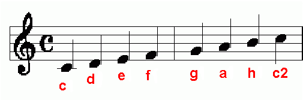

V hudbě se používá sedm základních jmen not: C, D, E, F, G, A, H. Tyto noty se opakují v různých výškách (oktávách). V českém značení se používá písmeno H místo B, jak je to běžné v anglosaských zemích. Po H následuje opět C, a tak se kruh uzavírá.
Jména not jsou: c, d, e, f, g, a, h, c2
Toto jsou tóny not:
